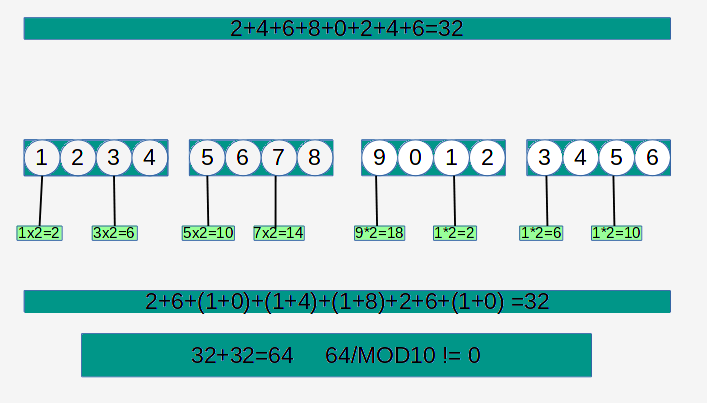

Luhn Algoritması
Lunh algoritması kredi kartı numaralarını oluşturmajk ve doğulamak için
kullanılan bir algoritmadır. 1954 yılında Hans Peter Luhn ve IBM tarafından
geliştirilmiştir. Diğer bir ismi ile "Mod Check".
Kullamı ve uygulaması şu şekildedir;
1) Çift hanelerdeki rakamlar toplanır.
2) Tek hanelerdeki rakamlar 2 ile çarpılır ve elde edilen sayıların basamakları toplanır
3) Hesaplanan iki toplam sonucu birbirleriyle toplanır.
4) Elde edilen sonuç Mod10 ise yani onun katı ise kart numarası geçerlidir.
NOT: Kart numaraları 16 hanelidir.
Daha iyi açıklamak gerekirse bu resim yardımcı olacaktır.
Ben bu algoritmayı python ile kodlayarak aşağıdaki gibi bir Python programı yazdım inceleyebilir.
kendi algoritmanızı yazabilirsiniz. Faydalı olması dileğiyle...
1 2 3 4 5 6 7 8 9 10 11 12 13 14 15 16 17 18 19 20 21 22 23 24 25 26 27 28 29 30 31 32 33 34 35 36 | print("Mutlutekin / mutlutekin.com") kart=input("Kredi kartı no giriniz : ") citf_hane=(int(kart[1])+int(kart[3])+int(kart[5])+int(kart[7])+int(kart[9])+int(kart[11])+int(kart[13])+int(kart[15])) print (citf_hane) b=(int(kart[0])*2) c=(int(kart[2])*2) d=(int(kart[4])*2) e=(int(kart[6])*2) f=(int(kart[8])*2) g=(int(kart[10])*2) i=(int(kart[12])*2) j=(int(kart[14])*2) a=(b,c,d,e,f,g,i,j) ikili=0 tekli=0 for say in a: if say > 9: say=str(say) top=int(say[0])+int(say[1]) ikili=ikili+top elif say < 10: say=str(say) top2=int(say[0]) tekli=tekli+top2 tekhane=tekli+ikili print("Çift Hane Kontrolu : {}".format(citf_hane)) print("Tek Hane Kontrolu : {}".format(tekhane)) mod10=citf_hane+tekhane if mod10%10==0: print("mod10 kontrolü : kartınız geçerli") elif mod10%10!=0: print("mod10 kontrolü : kartınız geçerli değil") |